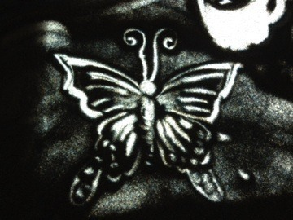
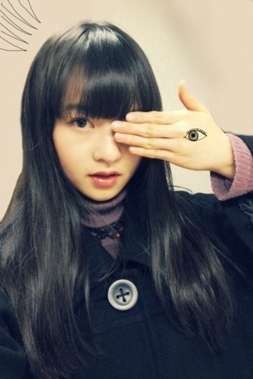
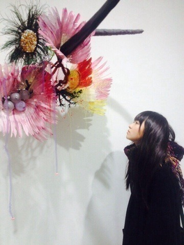
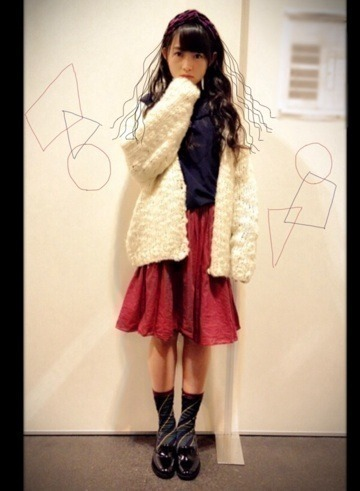
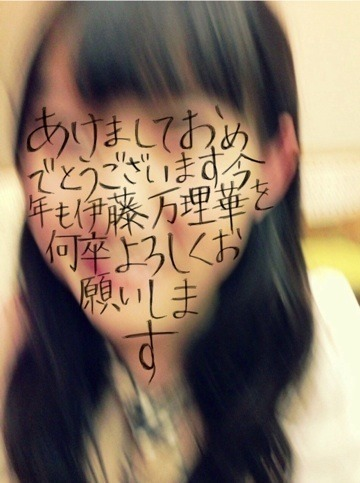

2014/0113Monえんどれすスン。537 回目
すとーるぐるぐる〜
乃木どこ隠し芸大会！
まいまい、ひめか、
私の3人が挑戦したのは
サンドアート。
いかがでしたか？
最初サンドアートをやることが
決まった時先生がやっているのを見て
なんとなくできそう
と勝手に思ってましたが...
実際やってみるとすごく難しい。
絵を描くのは得意なのですが
砂を使って描くことって、
分量だったり、払い方によって
変わるしすぐ崩れてしまって
調整するのが大変。
しかも砂を触ったのが
久しぶり過ぎて...！

↑蝶描いてみた
他のメンバーの練習してる姿を見て
自分たちも頑張らなきゃって
勇気付けられた。
練習期間の時期が
みんな忙しくて大変でしたが、
楽しくパフォーマンスできました。
先生、お忙しい中
ありがとうございました。
まいまい、ひめか
ありがとう。
これからは特技の欄に
サンドアートって書こうね笑
そして、新堂本兄弟。
おいでシャンプー歌いました！
今年を占ってもらったのですが
ランキングが13位でした。
13位...
びみょおおおぉぉおお
っはーーーーーー
コメント思ってた以上に
たくさんの方がおすすめのもの
教えてくださって嬉しかった〜
気になったものを
少しずつ見てみようと思う。
ありがとう。
今日は成人式で振袖の方が
たくさんいて華やかだったな。
成人されたみなさん
おめでとうございます！！
私はあと2年後。
振袖何色がいいかなー？
まりか
2014/0111Sat左目の行方。536回目

ついに
NOGIBINGO!2
が始まりました！
前回より、乃木坂46の良さが
伝わればいいなあ。
MCがイジリーさんで嬉しいです。
自然体に楽しめるように
頑張ります！
昨日は展覧会に行った。

リナ・バネルジー
私は何でできていて、
あなたはどうやって私の名前を知るの？
興味深いタイトル...
繊細で物憂げ
触れたい、
触れたら壊れてしまいそう。
あなたは何でできているの。
心地の良いため息が出ます。
そして、その後は
クリープハイプさんの映画
自分の事ばかりで情けなくなるよ
を観に行きました。
行きたくても予定が合わなくて
結局終わってしまったのだけど、
再再上映で
観ることができました。
最近、休日は映画を借りて
たくさん観るようにしています。
コメントでたまに
映画だったり本だったり
音楽だったり美術館だったり
お店だったり食べ物だったり
教えてくださる方がいて嬉しい〜
ちゃっかりメモしています。
これからも
まりか好きそうだなー
とか
好きだろうなー
とか
みなさんが好きなもの
とか教えてください！
それを見たら
私はこんなイメージなんだなー
っていうのわかるっ
きょんきょーーーーーーん
これ、結構前の写真だ笑
では、明日お仕事頑張ってきます。
まりか
2014/0108Wed好きだ、切りっぱな し。535回目
うわあああああああ
ウォンバットかわいいいいい
学校が始まったよー
といっても、3学期なので
3年生はほとんど行かなくなります。
シスターの十字架に
反応してしまったゴシックドール
こないだ撮影の休憩中に
まいまいがゲームしてて独り言
言ってるの面白かったー
くしゃ顔！
まいまいと変顔すること多いけど
似てるなーと思うねん
.........
12日 乃木のの
真夏とさゆと久々の乃木のの！
相変わらずゆるゆるで楽しかったよー
15日 EX大衆 発売
個人pvについて。
本当にありがたいです。嬉しい
これは...見るべし！！
17日 LARME008 発売
LARMEガールになりきりました。
メイクもヘアーもラブリーでした！
チェックよろしくお願いします。
質問回答します。
最近知ったんだけどマリカって
アラビア語で女王って意味らしい。
既に知ってるかな？
実は名前の由来とか？
▶︎聞いたことある！
名前の由来ではないですよ。
で、でも女王って......
気分いいなあーははははははは
あ、いつかの撮影の時に
スタッフさんが
フランス語でマリカはてんとう虫だよ
と言われたの忘れてた。
...それは本当ですか
まりっかが乃木どこの大食いの回で
やってたごま油と砂糖と醤油のやつ！
やってみたいから分量教えてー
やってみたいから分量教えてー
▶︎ご飯には醤油多めの方が
食べやすいですたぶん、適当です。
トマトにかけるのもおすすめです！
トマトには1:1:1かな。
このソースのおかげで生のトマト
食べれるようになったんです！
素晴らしい！！
バナナマンさんから大絶賛(美化)
されたので自信を持ってお勧めします。
今、兄からおすすめ曲
パソコンに入れてもらってます。
APOGEEさん聴いてます。
Star Honeyがすきです。
おやすみなさい！！
まりか
2014/0105Sun5粒だけいくら。534 回目
新年一発目は名古屋個握でした！
前日にみんなでひつまぶし食べた
あーーー美味だったなああああ

2014年カレンダーのコーデなのだ。
気付いた人もいた！嬉しい！
2部からKINJIで買った
白ニット羽織りました。
ターバンにふたつむすび
青木むすびさん...
の作品すきだー
初売りのセールに行こうと
街へ繰り出したけど
人混みがすごかったので
結局古着屋で3時間以上格闘して
4着ほど買った笑
みんなも初売り行きましたか？
足元はCHILDWOMANの靴下
mysticのオペラパンプス
新年の挨拶をしっかりしました。
正月だからかみなさん
どこかしらほわーんとしてて
和やかな感じだったな
あ、新年のブログの話多かったな。
字が綺麗ってほめられて嬉しかった笑
美彩お誕生日おめでとうー！！
今日の生誕祭におじゃましたけど、
とても感動しました。
美彩とはずっと仲良くさせてもらってて
本当にお世話になってるお姉さん。
年下の子を本当に可愛がってくれるし
お姉さんらしいお姉さんだけど、
甘えん坊だし、なんか不思議な存在！
でも隣にいてくれるだけで
めっちゃ安心する。
今回のシングルのフォーメーション
美彩が隣ですごい嬉しかった^^
私のことも家族のことも
好きといってくれるの笑
ごはん連れてってね♪←
明日から
お仕事、学校が始まりますね！
気を引き締めてがんばっていこう
まりか
2014/0102Thu少女研究開始。533回目
馬馬馬あああああああああ！！！

馬あああああああああ！！！！！！